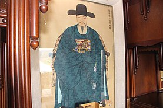

Born in Jeolla-do Naju passed the military examination in 1583 worked as a hullyeonwon Bongsa(훈련원 봉사(訓鍊院奉事)) and promoted to military officer in Jeollajwasuyeong. According to the address to the throne written by Na Daeyong, he worked in army for 6 years to defend north and 7 years to defend south and worked under yi sun sin as Gamjojeonseonchullapgunbyeonggungwan (battleship managing military officer, 감조전선출납군병군관(監造戰船出納軍兵軍官))
As Japanese Invasion of Korea, he was assigned to Gajang (temporary commander) of one of five harbors in Jwasuyeong, Balpo. He had done active part as commander of Yugun(유군(遊軍)), assistance soldiers. He got shot in battle of sacheon. But soon came back. He worked to invent several ships after the war.
He died in 1612 and buried at South Jeolla Province Naju munpyeongmyeon.